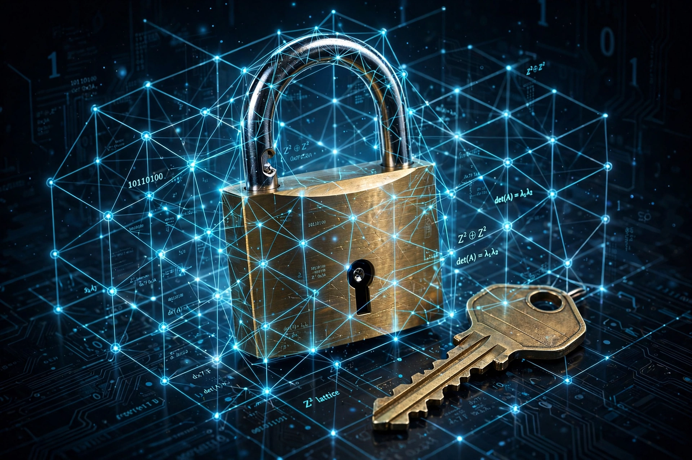

Post-quantum cryptography (PQC), sometimes referred to as quantum-proof, quantum-safe, or quantum-resistant cryptography, is the development of cryptographic algorithms (usually public-key algorithms) that are thought to be secure against a cryptanalytic attack by a quantum computer. Most currently used public-key schemes — RSA, Diffie–Hellman and elliptic-curve cryptography — would be broken by a large-scale quantum computer running Shor's algorithm.

Post-quantum schemes rely on mathematical problems believed hard for both classical and quantum computers: lattice-based cryptography (short vectors in high-dimensional lattices), hash-based signatures, code-based cryptography (such as the McEliece system, proposed in 1978), multivariate polynomial equations, and supersingular isogeny graphs — the last weakened by the 2022 break of SIKE.
The US National Institute of Standards and Technology (NIST) ran a public competition from 2016 to select quantum-resistant standards. In 2022 it chose CRYSTALS-Kyber for key establishment and CRYSTALS-Dilithium, FALCON and SPHINCS+ for signatures. The first final standards — FIPS 203 (ML-KEM), FIPS 204 (ML-DSA) and FIPS 205 (SLH-DSA) — were published in August 2024.
"Harvest now, decrypt later" attacks motivate early migration: data encrypted today may be stored and decrypted once a cryptographically relevant quantum computer exists. Major browsers, messaging apps (Signal's PQXDH, Apple's PQ3 for iMessage) and cloud providers have begun deploying hybrid key exchange combining classical and post-quantum algorithms.
See also: Quantum computing · Shor's algorithm · Lattice-based cryptography